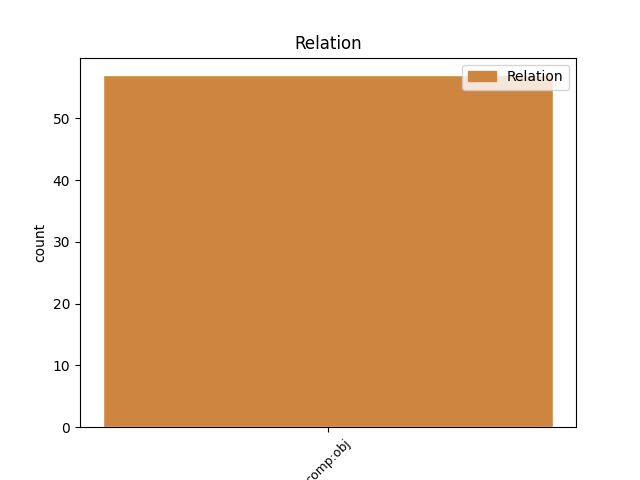
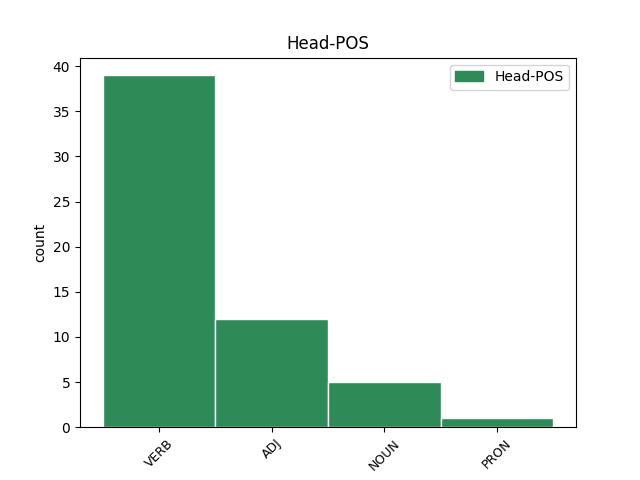
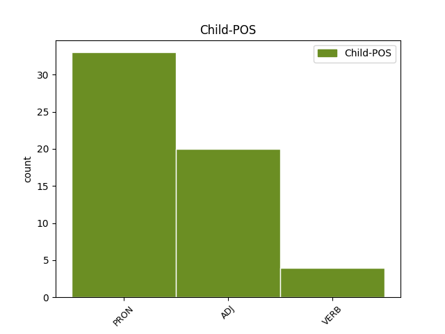

Distribution of features within this leaf



Agreement Rules sorted by frequency.
- When the dependent token is the direct object complements(comp:obj) of the head token, and the dependent token is PRON.
1 ea is PRON p-p---na- Case=Acc|Gender=Neut|Number=Plur 2 comp:obj _ LId=is1
2 conmemorando conmemoro VERB v-sppanb- Case=Abl|Gender=Neut|Number=Sing|Tense=Pres|VerbForm=Part|Voice=Act 0 _ _ _
3 militum _ _ _ _ 0 _ _ _
4 animos _ _ _ _ 0 _ _ _
5 accendebat _ _ _ _ 0 _ _ _
6 . _ _ _ _ 0 _ _ _
1 ii _ _ _ _ 0 _ _ _
2 primo _ _ _ _ 0 _ _ _
3 coepere _ _ _ _ 0 _ _ _
4 pessumum _ _ _ _ 0 _ _ _
5 quemque _ _ _ _ 0 _ _ _
6 et _ _ _ _ 0 _ _ _
7 omnibus omnis ADJ a-p---md- Case=Dat|Gender=Masc|Number=Plur 8 comp:obj _ LId=omnis1
8 invisum invideo VERB v-srppma- Aspect=Perf|Case=Acc|Gender=Masc|Number=Sing|Tense=Past|VerbForm=Part|Voice=Pass 0 _ _ _
9 indemnatum _ _ _ _ 0 _ _ _
10 necare _ _ _ _ 0 _ _ _
11 : _ _ _ _ 0 _ _ _
1 His _ _ _ _ 0 _ _ _
2 rebus _ _ _ _ 0 _ _ _
3 conparatis _ _ _ _ 0 _ _ _
4 Catilina _ _ _ _ 0 _ _ _
5 nihilo _ _ _ _ 0 _ _ _
6 minus _ _ _ _ 0 _ _ _
7 in _ _ _ _ 0 _ _ _
8 proxumum _ _ _ _ 0 _ _ _
9 annum _ _ _ _ 0 _ _ _
10 consulatum _ _ _ _ 0 _ _ _
11 petebat _ _ _ _ 0 _ _ _
12 , _ _ _ _ 0 _ _ _
13 sperans spero VERB v-sppamn- Case=Nom|Gender=Masc|Number=Sing|Tense=Pres|VerbForm=Part|Voice=Act 0 _ _ _
14 , _ _ _ _ 0 _ _ _
15 si _ _ _ _ 0 _ _ _
16 designatus _ _ _ _ 0 _ _ _
17 foret _ _ _ _ 0 _ _ _
18 , _ _ _ _ 0 _ _ _
19 facile _ _ _ _ 0 _ _ _
20 se _ _ _ _ 0 _ _ _
21 ex _ _ _ _ 0 _ _ _
22 voluntate _ _ _ _ 0 _ _ _
23 Antonio _ _ _ _ 0 _ _ _
24 usurum utor VERB v-sfpama- Case=Acc|Gender=Masc|Number=Sing|Tense=Fut|VerbForm=Part|Voice=Act 13 comp:obj _ LId=utor1|SpaceAfter=No
25 . _ _ _ _ 0 _ _ _
Disagree Examples:
1 Ambae _ _ _ _ 0 _ _ _
2 , _ _ _ _ 0 _ _ _
3 videri _ _ _ _ 0 _ _ _
4 dum _ _ _ _ 0 _ _ _
5 volunt _ _ _ _ 0 _ _ _
6 illi ille PRON p-s---md- Case=Dat|Gender=Masc|Number=Sing 7 comp:obj _ _
7 pares par ADJ a-p---fn- Case=Nom|Gender=Fem|Number=Plur 0 _ _ _
8 , _ _ _ _ 0 _ _ _
9 Capillos _ _ _ _ 0 _ _ _
10 homini _ _ _ _ 0 _ _ _
11 legere _ _ _ _ 0 _ _ _
12 coepere _ _ _ _ 0 _ _ _
13 invicem _ _ _ _ 0 _ _ _
14 . _ _ _ _ 0 _ _ _
1 Ego _ _ _ _ 0 _ _ _
2 porro _ _ _ _ 0 _ _ _
3 illius _ _ _ _ 0 _ _ _
4 semita _ _ _ _ 0 _ _ _
5 feci _ _ _ _ 0 _ _ _
6 viam _ _ _ _ 0 _ _ _
7 , _ _ _ _ 0 _ _ _
8 Et _ _ _ _ 0 _ _ _
9 cogitavi _ _ _ _ 0 _ _ _
10 plura _ _ _ _ 0 _ _ _
11 quam _ _ _ _ 0 _ _ _
12 reliquerat _ _ _ _ 0 _ _ _
13 , _ _ _ _ 0 _ _ _
14 In _ _ _ _ 0 _ _ _
15 calamitatem _ _ _ _ 0 _ _ _
16 deligens deligo VERB v-spp-mn- Case=Nom|Gender=Masc|Number=Sing|Tense=Pres|VerbForm=Part 0 _ _ _
17 quaedam quidam PRON p-p---na- Case=Acc|Gender=Neut|Number=Plur 16 comp:obj _ _
18 meam _ _ _ _ 0 _ _ _
19 . _ _ _ _ 0 _ _ _
1 Paucis _ _ _ _ 0 _ _ _
2 diebus _ _ _ _ 0 _ _ _
3 interpositis _ _ _ _ 0 _ _ _
4 provolat _ _ _ _ 0 _ _ _
5 , _ _ _ _ 0 _ _ _
6 Pecus _ _ _ _ 0 _ _ _
7 trucidat _ _ _ _ 0 _ _ _
8 , _ _ _ _ 0 _ _ _
9 ipsos _ _ _ _ 0 _ _ _
10 pastores _ _ _ _ 0 _ _ _
11 necat _ _ _ _ 0 _ _ _
12 , _ _ _ _ 0 _ _ _
13 Et _ _ _ _ 0 _ _ _
14 cuncta cunctus ADJ a-p---na- Case=Acc|Gender=Neut|Number=Plur 15 comp:obj _ _
15 vastans vasto VERB v-spp-fn- Case=Nom|Gender=Fem|Number=Sing|Tense=Pres|VerbForm=Part 0 _ _ _
16 saevit _ _ _ _ 0 _ _ _
17 irato _ _ _ _ 0 _ _ _
18 impetu _ _ _ _ 0 _ _ _
19 . _ _ _ _ 0 _ _ _
1 Ambitio _ _ _ _ 0 _ _ _
2 namque _ _ _ _ 0 _ _ _
3 dissidens dissideo VERB v-spp-fn- Case=Nom|Gender=Fem|Number=Sing|Tense=Pres|VerbForm=Part 0 _ _ _
4 mortalium mortalis ADJ a-p---mg- Case=Gen|Gender=Masc|Number=Plur 3 comp:obj _ _
5 Aut _ _ _ _ 0 _ _ _
6 gratiae _ _ _ _ 0 _ _ _
7 subscribit _ _ _ _ 0 _ _ _
8 aut _ _ _ _ 0 _ _ _
9 odio _ _ _ _ 0 _ _ _
10 suo _ _ _ _ 0 _ _ _
11 . _ _ _ _ 0 _ _ _
1 nam _ _ _ _ 0 _ _ _
2 minima _ _ _ _ 0 _ _ _
3 commoda commodus ADJ a-p---na- Case=Acc|Gender=Neut|Number=Plur 6 comp:obj _ LId=commodus1
4 non _ _ _ _ 0 _ _ _
5 minimo _ _ _ _ 0 _ _ _
6 sectantis sector VERB v-pppdma- Case=Acc|Gender=Masc|Number=Plur|Tense=Pres|VerbForm=Part|Voice=Act 0 _ _ _
7 discrimine _ _ _ _ 0 _ _ _
8 similes _ _ _ _ 0 _ _ _
9 aiebat _ _ _ _ 0 _ _ _
10 esse _ _ _ _ 0 _ _ _
11 aureo _ _ _ _ 0 _ _ _
12 hamo _ _ _ _ 0 _ _ _
13 piscantibus _ _ _ _ 0 _ _ _
14 , _ _ _ _ 0 _ _ _
15 cuius _ _ _ _ 0 _ _ _
16 abrupti _ _ _ _ 0 _ _ _
17 damnum _ _ _ _ 0 _ _ _
18 nulla _ _ _ _ 0 _ _ _
19 captura _ _ _ _ 0 _ _ _
20 pensari _ _ _ _ 0 _ _ _
21 posset _ _ _ _ 0 _ _ _
22 . _ _ _ _ 0 _ _ _